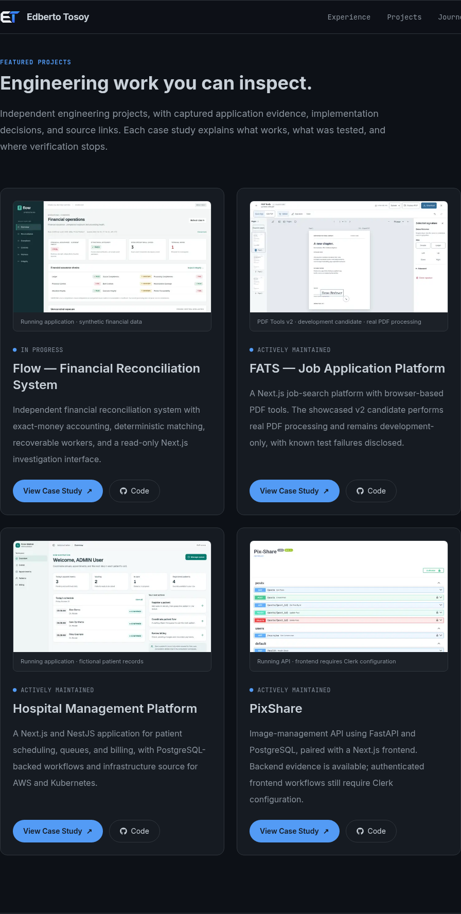
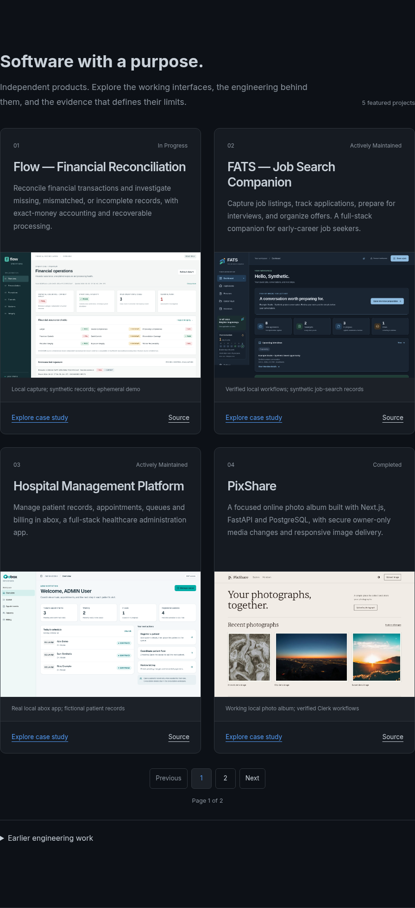
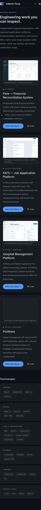
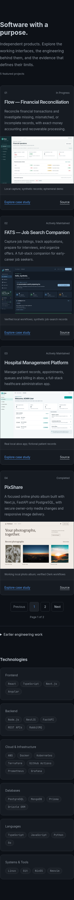
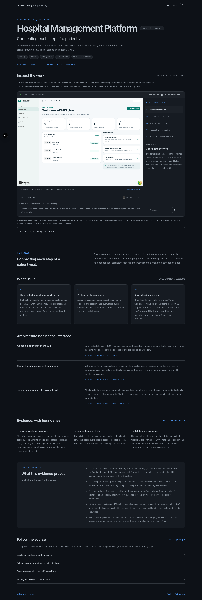
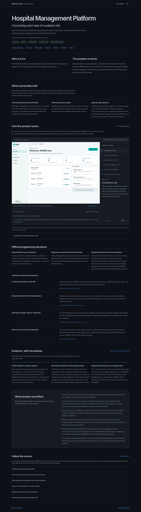
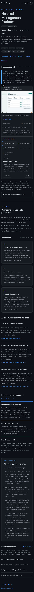
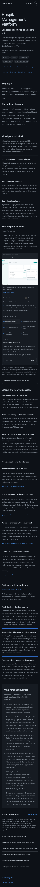
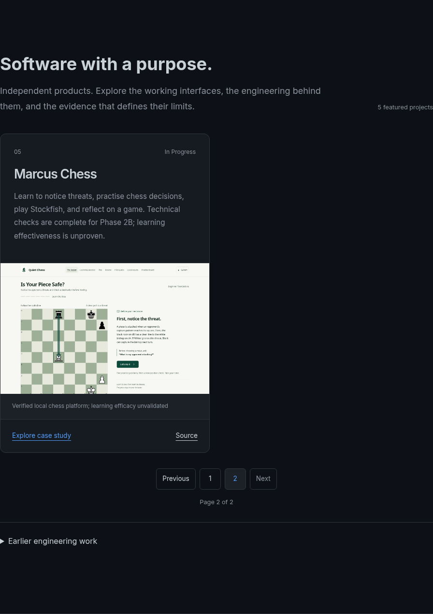

Actual browser captures from personal-os/apps/main. Open an image to inspect its original resolution. The before captures preserve the original viewport/element framing; after captures use neutral focus and document clipping below the sticky header. No compositing, simulated app UI or image editing was used.








The fifth featured project has its own native, linkable page. Earlier engineering work remains available below it.
